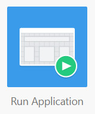

Before You Begin
Purpose
In this tutorial, you learn how to create a Database Application in Application Express from a spreadsheet.
Time to Complete
Approximately 15 minutes
Background
Oracle Application Express provides a functionality to create a desktop application based on a spreadsheet data. This can be done by selecting From a spreadsheet in the Create Application Wizard.
What Do You Need?
-
Oracle Application Express workspace
-
Spreadsheet to create the database application - The tasks.txt spreadsheet is used in this tutorial.
Creating an Application from Spreadsheet Data
-
In the Application Express login page, enter the following login credentials and click Sign In:
-
Workspace: obe
-
Username: obe
-
Password: oracle
View Image
Description of this image -
-
On the Workspace home page, click the App Builder icon.
View Image
Description of this image -
Click the Create button.
View ImageDescription of this image -
In the Create an Application modal window, select From a spreadsheet.
View ImageDescription of this image -
For Load Method, select Upload file, comma separated (*.csv) or tab delimited and click Next.
View Image
Description of this image -
For Data, click Choose File, navigate to the spreadsheet (or CSV) file, and click Open. Enter \t for Separator, ensure that "First row contains column names." checkbox is enabled, and click Next.
View Image
Description of this image -
For Table Properties, select HR for Schema and enter TASKS for Table Name. Review the table properties and click Next.
View ImageDescription of this image -
For Application Options, accept the default for Application Name and Report Type and click Create Application.
View ImageDescription of this image -
The application is created successfully.
Executing and Reviewing the Application
-
On the Application home page, click the Run Application icon.
View ImageDescription of this image -
Enter your login credentials and click Log In.
View Image
Description of this image -
The home page of the TASKS application, containing the interactive report, is displayed. Click the Edit icon in the first row.
View Image
Description of this image -
The modal window to edit the Tasks entry appears. Change the value for Cost and click Apply Changes.
View Image
Description of this image -
The Cost has been updated. Now you create a new Task. Click Create.
View Image
Description of this image -
Enter details for the new task and click Create.
View Image
Description of this image -
The new task is successfully created. You will be able to see the new task in the Interactive Report.
View Image
Description of this image